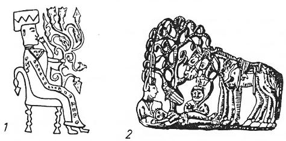

Aşağıdaki efsane, bir Türeyiş destanıdır. Bu efsaneyi bir yaratılış destanı olarak kabul edemedik. Çünkü ağaçtan doğan bu beş çocuktan önce de Uygur halkı, çoktan yaratılmış ve hayatta idiler. Uygurlar, Göktürk devletinin M.S. 630’da yıkılmasından sonra, Budizm ile temasa gelmişler ve bu dini benimsemeye doğru gitmişlerdi. VII. asrın ortasında yaşayan bir Uygur reisinin P'u-sa adını taşıması da, bunun en güzel delilidir. P'u-sa, Budizm’deki Buda veya Bodhissatva'nın Çince karşılığıdır. Uygur devleti 744’de bir Kağanlık halinde kurulunca genişlemeye başladı ve Doğu Türkistan şehirlerini de sınırları içine aldı. Turfan, Beş-Balıg, Kuça, Karaşar gibi şehirlerin Türkleşmeye doğru gitmeleri bu tarihten itibaren başlamıştı. Bundan önce bu şehirlerde az da olsa, Türk kolonilerinin bulunduğu bir gerçekti. Türklerin, Budizm'in bir nevi kaynağı sayılan bu şehirlerde yerleşmeleri, ister istemez Budist Türklerin de ortaya çıkmalarına imkân vermişti. M.S. 763’de üçüncü Uygur Kağanı Bögü-Kağan, Mani rahiplerini çağırarak onları dinledi ve bu dini Uygur devletinin resmi dini olarak kabul etti. Dolayısı ile Bögü-Kağan'ın bu hareketi, kendisine Orta Asya tarihinde büyük bir şöhret sağladı. İşte aşağıdaki efsanenin bir kahramanı gibi görünen Bögü-Kağan, Mani dinini kabul eden ve yayan bu kağandır. Efsanenin gerek konu ve gerekse dayandığı inançlar bakımından, Mani dininin prensipleri ile kurulmuş olması gerekirdi. Fakat durum, Mani dininin lehinde inkişaf etmemiştir. Eski Türk inanç ve efsaneleri ağır basmış ve efsanenin ana motifleri, eski Orta Asya Şamanizm’inin unsurları ile donanmıştır. Bu sebeple eski Türk inançları Manihaizm ile Budizm'i adeta efsanenin dışına itmişlerdi.
Çin ve İran kaynakları bu efsaneden birçok defalar söz açmışlardır. Bu eserimizde Efsanenin tercümelerini, en orijinal metinlere dayanarak vermeye çalışacağız.
"Bundan önce, Uygurların durumundan ve onların kitaplarında nasıl yazıldı ise, inanışlarından ve kendi dinlerinden birazını da yazmıştık.. Onların inanışlarına göre, ilk türedikleri yer, Arkun (Orhun) nehri kenarı idi. Bu nehir kaynağını, Kara-Korum denilen dağdan alırdı. O dağda, (Ögedey) Kaan'ın yaptırılmasını emrettiği şehrin adı da, (Kara-Korum)’du. Dağdan otuz tane çay ve dere çıkardı. Her çayın kıyısında da bir boy otururdu. Uygurların Arkun nehri kıyılarında, başlıca iki boy grubu vardı. Sayıları artıp da, nüfusları çoğalınca, bunlar da diğer kavimler gibi toplandılar ve kendi aralarında birini başkan yaparak, ona itaat ettiler. Böylece, aradan 500 senelik bir süre geçti. Bundan sonra Bögü-Han onların başlarına geçti. Söylendiğine göre Bögü-Han, Efrasiyah'dır. Bir kuyuya da bu ad verilmişti. Kara-Korum'un kenarındaki büyük bir kaya da, aynı adı taşırdı. Bu kuyu, Bijen adlı pehlivanın atıldığı bir kuyudur. Çayın kenarında bulunan ve Ordu-Balıg adı verilen büyük şehrin adı da böyledir. Bu gün bu şehre, Mawu-Balıg adı verilir. Şehrin dışındaki kayalar üzerine, bir saray resmi oyulmuştur. Ben, bunların hepsini gördüm, (Ögedey) Kaan zamanında, bu kayaları kazdılar. Kayaların altında bir kuyu ve bu kuyunun ağzında da büyük bir taş levha buldular. Bu levhanın üzerinde bazı yazılar vardı. Bu yazıların ne olduğunun anlaşılması ve ne dediğinin sökülmesi, Kaan tarafından emredildi. Bunun üzerine oraya bazı adamlar geldiler. Fakat hiç kimse bu yazıları okuyamadı. Hıtay'da bir kavim vardır. Onlara ... derler. Onlardan bazı kimseleri de getirdiler ve bu yazıların, onlara ait olduğu anlaşıldı.
Taşa oyulmuş olan bu yazıtta, şöyle deniyordu:
"Kara-Korum çaylarından sayılan iki nehir vardı. Bunlardan birine Toğla ve diğerlerine de Selenge adı verilirdi. Bu nehirler akarak, Kamlancu adlı bir yerde birleşirlerdi. Bu iki ırmağın arasında iki tane ağaç vardı. Bu ağaçlardan biri fusuk ve diğeri de farsların naj dedikleri ağaca benziyordu. Kışın bile bunların yaprakları, servi gibi dökülmezdi. Meyvasının tadı ve şekli ise, tıpkı Çam fıstığınınkine benzerdi. Öbür ağaca da Tur (?) ağacı derlerdi. Bu iki ağaç da, iki dağın arasında yetişerek büyümüştü.
"Bir gün bu iki ağacın arasına, gökten bir ışık inmişti. Bunun üzerine, iki yandaki dağlar yavaş yavaş büyümeye başladılar. Bu durumu gören halk ise, hayretler içinde kalmıştı. İçlerinde büyük bir saygı duyarak, Uygurlar oraya doğru yaklaştılar. Tam yaklaştıkları bir sırada, kulaklarına çok tatlı ve güzel müzik nağmeleri gelmeye başladı. Her gece buraya bir ışık inmeye ve ışığın etrafında da otuz defa şimşek çakmaya başladı. Diğer bir gün de aynı yerde, ayrı ayrı kurulmuş beş tane çadır gördüler. Bunların her birinde, birer çocuk oturuyordu. Her çocuğun karşısında da, onları doyurmaya yetecek kadar süt dolu emzikler asılı idi. Çadırın tabanı da, baştan aşağıya kadar gümüşle döşenmişti.
"Bütün boyların reisleri ve halkları, bu garip şeyi görmek için yerlerini bırakıp koşmuşlardı. Bu manzarayı görünce, saygı ile diz çöküp, selâm verdiler. Biraz sonra da çocukları alarak, dışarı çıktılar. Beslenip, büyütülmeleri için de, onları sütannelerine ve dadılara verdiler. Her fırsatta onlara saygı gösteriyorlar ve ikramda bulunuyorlardı. Çocuklar artık, süt çocuğu olmaktan çıkıp da, konuşmaya başlayınca, Uygurlardan anne ve babalarını sordular. Onlar da, o iki ağacı gösterdiler. Bunun üzerine halk, çocukları alıp, ağaçların yanına gittiler. Çocuklar ağaçları görünce, onlara tıpkı evlâdın babasına gösterdiği saygıyı gösterdiler. Ağaçların karşısında diz çöktüler ve yeri öptüler. Bunun üzerine ağaçlar da dile gelip şöyle dediler:
" - Güzel huy ve iyi özelliklerle bezenmiş çocuklar, böyle olurlar ve anne ile babalarına böyle saygı gösterirler. Ömrünüz uzun, adınız ünlü ve şöhretiniz de devamlı olsun!"
"0 bölgelerde yaşayan bütün kavimler, bu çocuklara hükümdar oğullarıymış gibi saygı gösterdiler. Çocukların doğdukları yerden şehre dönülünce, onların her birine birer ad koydular. En büyüğünün adı Sonkur-Tegin, ikincisinin adı Kotur-Tegin, üçüncüsünün adı Tükel-Tegin, dördüncüsünün adı Or-Tegin ve beşincisinin adı da, Bökü-Tegin oldu. Çocukların doğuşundaki kutsal durumu görenler, bunlardan birinin hükümdar olarak seçilmesi Kanaat’ına vardılar. Çünkü bunlar, Tanrı tarafından bu iş için gönderilmiş olmalıydılar.
"Bu çocuklar arasında Bökü-Tegin, gerek güzelliği ve gerekse boyu posu, sabrı, iradesi, ileriyi görüşü bakımından diğerlerinden daha ileride idi. Ayrıca bütün milletlerin dillerini ve yazılarını da biliyordu. Herkes, onun han olarak seçilmesi üzerinde birleştiler ve büyük şenlikler yaparak onu Hanlık tahtına oturttular. O, memleketi adaletle döşedi ve zulm sahifelerini de kapadı. Onun etrafındaki adamlar, maiyeti, askerleri, atları ve kulları gittikçe çoğalmaya başladı.
'Tanrı, ona bütün dilleri bilen üç karga göndermişti. Nerede mühim bir iş olursa, bu kargalar hemen oraya giderler ve o işin nasıl olup bittiğini gözlerler ve ondan sonra da Han'a haber getirirlerdi.
"Bögü-Han bir gece evinde uyurken, pencerenin önünde bir kızın hayali belirdi ve onu uyandırdı. Bu hayaletten korkan Bögü-Han, kızı görmemezlikten geldi ve kendisini uykudaymış gibi gösterdi. İkinci gece kız yine geldi. Fakat Han, yine görmüyormuş gibi yaptı ve kendisini uykuda gösterdi. Sabah oldu. Han vezirine danıştı. Üçüncü gece kız yine gelince, vezirinin öğüdüne uyarak, kızı alıp Ak-tağ'a gitti. Bu dağda sabaha kadar beraber kalıp kızla konuştular. Bu buluşma ve konuşma, yedi sene, altı ay ve yirmi iki gün, her gece böyle devam etti. Ayrılacakları gün, kız ona şöyle dedi:
" - Doğudan batıya kadar bütün dünya, senin buyruğun altında kalacaktır. İşlerini sıkı tut ve iyi çalış. Ayrıca, insanların da değerini bil!"
"Bögü-Han, askerlerini topladı ve onlardan 300.000 kadar seçme askerini Sonkur-Tegin'in komutasına verdi. Ayrıca Sonkur-Tegin'in Kırgız ve Moğol ülkelerine akın yapmasını emretti. 100.000 askerini de Kotur-Tegin'in komutasına verdi ve onu da akın için Tankut tarafına gönderdi. Tükel-Tegün'i de Tibet yönüne gönderdi. Kendisi de 300.000 askerini emrine alarak Hıtay (Çin) yönüne yöneldi. Diğer kardeşi (Or-Teğin'i de) kendi yerinde bıraktı. Etrafa giden orduların hepsi başarı kazanarak geri döndüler. Getirdikleri paralar, mallar ve ganimetler, sayı ile sayılamazdı. Her yerden birçok adamlar topladı ve onların yardımı ile Arkun nehri kıyısında, Ordu-Balıg adlı baş şehrini kurdurdu. Doğudaki bütün ülkeler, bu suretle onların buyruğu altına girmişti.
"Bökü-Han, bir gece uyurken, beyazlar giymiş bir ihtiyar gördü. İhtiyar ona yaklaştı ve çam kozalağı büyüklüğünde bir yeşim taşı vererek, Böğü-Han'a şöyle dedi:
" - Eğer sen bu taşı muhafaza edebilirsen, dünyanın dört köşesi, hep senin buyruğun altında toplanacaktır!"
"Bögü Han'ın veziri de aynı gece, aynı rüyayı görmüştü. Ertesi sabah olunca hepsi toplandılar ve (aralarında görüşerek bu rüyaya bir mana vermeğe çalıştılar). Bunun üzerine orduları buyruklarına alıp Batıya yöneldiler. Gide gide Türkistan sınırlarına vardılar. Burada çayır ve çimenlerle döşenmiş, akarsuları bol bir yere rastladılar. Herkes bu yeri çok beğenmişti. Bunun için de bu yere bir şehir kurdular. Bu şelıir, şimdi Kuz-Balıg adı verilen, Balasagun şehridir. (Bu şehirde yerleştikten sonra), etrafa ordular göndermeye başladılar. Bu yolla her yeri ellerine geçirmiş oldular. Yeryüzünde onlara kafa tutan ve âsi görünen hiç bir kimse kalmamıştı.
"0 kadar ileri gitmişlerdi ki, insana benzeyen acayip mahlûklara da rastladılar. Bu insanların elleri ayakları tıpkı hayvanlara benziyordu. Bunları görünce, artık bundan sonra insanların bulunmadığını anlamışlar ve geri dönmüşlerdi. Bütün bu akınlar sırasında pek çok kıymetli şeyler toplamışlardı. Bunların hepsini bir araya getirerek Bögü Han da herkesin yaptığı hizmete göre, ele geçen bu malları aralarında bölüştü.
"Bundan sonra (Uygurların emrine giren hükümdarlar birer birer gelerek Bögü-Han'a saygılarını sundular). Bunlar arasında Hint padişahı çok çirkindi. Bunun için de Bügü-Han, bu padişahı huzuruna kabul etmedi. Bögü-Han (bu kabul töreninden sonra) bu padişahların hepsinin kendi ülkelerine dönerek, bölgelerini idare etmelerini emretti. Bundan başka bu padişahların Bögü-Han'a ne kadar vergi verecekleri de, ayrıca (bir toplantı ile) karar altına alındı. Artık yeryüzü zapt edilmiş ve Bögü-Han'ın karşısında bir engel kalmamıştı. Bunun için geri dönmeye karar verdi ve kendi yurduna geldi.
"Uygurların putlara tapmalarının sebepleri şunlardır: Uygurlar sihirbazlığı iyi biliyorlar ve kendi büyücülerine de Kam adını veriyorlardı. Bu büyücüler, Şeytanlar bize bağlıdırlar ve ne olup biterse, bize gelip haber verirler diyorlardı. Onlara göre kendileri, olmuş ve olacak her şeyi bilip ve (ona göre tedbirini alabilecek durumda idiler). Bu büyücülerin durumunu tetkik için, bazı kimseler onların yanlarına gitmişlerdi. Bu kişiler bana şöyle dediler:
" - Güya şeytanlar, onların çadırlarının pencerelerinin önüne gelir ve bu büyücülerle konuşurlarmış. Büyücüler, insanlara kötülük getiren bu ruhların, bazıları ile dostluk ve bazıları ile de düşmanlık güdüyorlardı. Bu büyücü Kamların en güçlü oldukları zaman, iyi veya kötü ruhlarla bağ kurdukları ve onlarla konuştukları günlerdi. Böyle günlerde Kamların cinsi hayatları söner ve kendilerinde şehvet diye bir şey kalmazdı. (İşte Uygurlar, bu sihirbazlara) Kam adını verirlerdi. Moğollarda ise ilim ve marifet diye bir şey yoktu. Onlar, eskiden beri hep kamların sözlerine inanırlar ve onların emirlerine bağlı kalırlardı. Şimdi bile hükümdar ailesinden gelen Han oğulları ile torunları, onların sözlerine inanır ve verdikleri öğütleri yerlerine getirirler. Hatta ve hatta bir işe başlanacağı zaman müneccimlerle büyücülerin öğüt ve yolları arasında bir birlik gözükmezse o işi durdururlardı. Bunun için de işe başlama emri verilmezdi. Moğollar, hastalarını da (onların öğütlerine göre) tedavi etmek isterler ve bu yolla hareket ederlerdi.
"Çin'de de putlara tapma inançları vardır. (Bögü-Han) bir gün, Çin'e elçi göndererek onların Tüviynan (?) denen din ulularını yanına davet etti. (Bu Çin rahipleri Uygur ülkesine) gelince, bunları (Uygur Kamları) ile karşılaştırıp, aralarında bir münakaşa yaptırdılar. Münakaşada bunların hangisi galip gelirse, (Bögü-Han da) onların dinini kabul edecekti. Çin'den gelen bu rahiplerin kutsal kitaplarına, Nom adı verilirdi. Onlar, bu kitaptaki sözlere çok inanırlardı. Bu kitapta, birçok akıl ermez ve batıl hikâyelerle olaylar anlatılıyordu. Bununla beraber bu kitap, insanlara eziyet verilmesine ve zulüm yapılmasına karşı idi. Bu kitaba göre kötülüğü iyilikle karşılamak lazımdı. Hayvanlara eziyet etmek de günah sayılıyordu. Bu kitapta bunlara benzer, peygamberlerin getirdikleri dinlere ve yollara uygun pek çok güzel öğütler de vardı. Onların din yolları ve kaideleri çoktur. Bu din, umumi çizgileri ile genel olarak, daha ziyade Hulûli mezhebine benzer. Dediklerine göre bu dine inanan insanlar, bir kaç bin sene önce bile mevcut idiler. Onlar yalnızca iyilik yapar ve ibadetle meşgul olurlardı. Ruhların yükselme ve alçalmalarının, insanların işledikleri işlerle ilgili olduğuna inanır ve (kötü işleri yapmamaya dikkat ederlerdi). Kendilerini bu yola vererek, bazıları padişahlık, bazıları vezirlik buldular. Bazıları da iyi bir tebaa olmaya çalıştılar. Aralarında dervişlik derecesine erenlerde vardı. Onlara göre halk arasında ayrılık ve düşmanlık ekenlerin, insan öldüren veya iftirada bulunanların, halka zulmederek, onlara eziyet verenlerin ruhları, ölümden sonra eziyet ve ızdırap içinde kalacaklardır. Çünkü bu ruhlar türlü kötü böceklerin, vahşi hayvanların ve buna benzer kötü hayvanların vücutlarına girerek, onların şekillerine bürünecek ve böyle yaşayacaklardı. Kötü işler işlemiş insanların (yeniden insan olarak doğmaları) mümkün değildi. Bunun için de onlar, sonsuz bir keder ve ıstırap içinde kalacaklardı.
"Çin'den gelen rahiplerle (Uygur) Kamları arasında yapılan münakaşada, Çin'den gelenler galip geldiler. Bunun için de (Bögü-Han), puta tapanların dinini kabul etli. Bu dine sonradan, birçok kavimler de inanmaya başladılar. Doğu ülkelerinde yaşayan puta tapan halklar, dinlerine çok bağlı ve mutaassıptırlar. Bunun için de Müslümanlara karşı düşmanlık güderler. Bögü-Han ölünceye kadar ömrünü saadet içinde geçirdi.
"Bana (söylenen) bu batıl şeyler ve yalan inançlar pek uzundur. Ben bunların ancak yüzde birini yazdım. Bunları yazmakla güttüğümüz maksat da, bu halkların cehaleti ile ahmaklıklarının ne derecede olduğunu göstermek içindir.
"Bir dostum da bana şöyle bir şey anlatmıştı : "Bir kitapta okuduğuma göre vaktiyle yaşamış bir kişi varmış. Bu adam kendi yurdundaki iki ağacın arasına bir çadır kurmuş. Bu çadırın içine de sıra ile kendi çocuklarını oturtarak, çocukların arasına birer mum koymuş. Bir takım adamları da toplayarak bu acayip şeyi göstermek için oraya götürmüş. (Çadırdan içeri girince), hemen diz çökerek, onlara saygı göstermiş (ve tapınmaya başlamış). Etrafındakilere de kendisi gibi yaparak (saygı) göstermelerini emretmiş. Cahil ve bilgisiz halk da buna inanmışlar ve tapınır gibi yerlere kapanmışlar. Bundan sonra da çocukları alarak iyi bir bakım ve büyük bir saygı ile büyütmüşler. (Aradan zaman geçip ve) çocuklar büyüyünce, bunlardan birini alıp Han yapmışlar.
"(Günün birinde) Uygurlar ile onlara bağlı olarak yaşayan halklar (bazı garip şeyler hisseder olmuşlar). (Nasıl olmuşsa) atlar kişnemeye, develer böğürmeye, vahşi hayvanlar ile köpekler ulumaya, sığırlar bağırmaya, koyun ve kuzular melemeye ve çocuklar da ağlamaya başlamışlar. Bu arada da her sesten "Göç! Göç '.diye bir söz duyulur olmuş. Uygurlar, (bu seslerden), artık eski yurtlarını bırakarak gitmenin zamanı geldiğini anlamışlar ve (her şeylerini toplayarak) yola koyulmuşlar. Her konakladıkları yerde de, "Göç! Göç!" seslerini duyar olmuşlar. (En sonunda bir yere gelmişler ve) orada Beş- Balıg şehrini kurmuşlar. Artık bundan sonra da "Göç! Göç!" sesleri de duyulmaz olmuş
Bu seslerin kesilmesini onlar, artık burada yerleşmeleri için bir buyruk olarak kabul ettiler ve orada yerleştiler. Ayrı beş mahalle yaptılar ve bu beş mahalleden meydana gelen şehre de Beş-Balıg adını verdiler. Bu şehir gün geçtikçe büyümeye başladı ve bu çağdan itibaren de Uygurların soy ve çocukları bu şehirde hükümdarlık etmeğe başladılar. (Uygurların Hanlarına) "İdi-kut" ünvanı verilmiştir. (Uygurların türedikleri) bu ağacın birer dalı da, her Uygur evinde duvara asılı olarak bulundurulurdu."
Uygurların türeyiş efsanesi ile ilgili başlıca kaynaklar: Uygurların menşe efsanesi ile ilgili en önemli kaynaklardan birisi, şüphesiz ki İran tarihçisi Cüveynî tarafından yazılmış olan eserdir.135 İkinci önemli kaynak da son Uygur hükümdarlarından Temür-Buka adına dikilmiş olan mezar taşı yazıtıdır. Bu yazıtın metni sonradan özet olarak Çin tarihlerine geçmiş ve bazı Avrupalı yazarlar da, ikinci elden kaynaklardan bu bilgileri özet olarak aktarmışlardı.136 Çince, orijinal mezar taşı yazıtının ilk tercümesi ise tarafımızdan yapılmıştır.137 Bu tercüme tamdır. Uygurların türeyişleri ile ilgili kaynaklara, burada üçüncü bir Çince kaynakta yeniden eklemiş bulunuyoruz, Batı ilim âleminin habersiz olduğu bu kaynak da bir mezar yazıtıdır ve tam tercümesi tarafımızdan yapılmıştır.138
"Hsieh ailesi Uygurlardandır. Onların ataları, (Göktürk Kağanlarının meşhur veziri) Tonyukuk idi. (Tonyukuk) aslen bir Çinli idi. Çinlilerin Sui Sülâlesinin (Çin’de egemen olduğu) bir çağda (M.S. 581 - 618), Çin ülkelerinde büyük karışıklıklar olmuş ve Göktürkler de, Çin'in içlerine doğru girmişlerdi. (O sırada, Çin'deki idareden memnun olmayan) birçok Çinliler , (Çin'e gelip geri dönen Türklerle birlikte) Göktürk iline gitmişlerdi. (Tonyukuk'un) P'o-p'o adlı bir kızı vardı. Bu kız (Göktürk Kağanı) Bilge Kağan ile evlendi ve onun hatunu oldu. (İlteriş Kağan'ın ve sonra da Bilge Kağan'ın veziri olan) Tonyukuk, Göktürk ülkelerini idare etmek için birçok planlar yaptı. Çin'de kurulmuş olan T'ang Sülâlesinin resmi tarihlerinin Göktürklerle ilgili bölümlerinde, bu olayların hepsi geniş olarak anlatılmıştır. Bilge Kağan ölünce, memleketinde birçok karışıklıklar meydana geldi. Bilge Kağan'ın hatunu (Tonyukuk'un kızı) P'o-p'o, bu karışıklık halini görünce, halkı ile birlikte Çin'e geldi ve Çin İmparatoru'na tabi oldu. Çin devleti ona, "Memleketini sulha kavuşturan Hatun" şeklinde, bir şeref ünvanı vermek sureti ile saygısını gösterdi. Göktürklerin bırakıp geldikleri topraklar da, bu yolla Uygurların eline geçti.
"(Göktürk devletinin) ortadan kalkmış olmasına rağmen, bu bölgelerde Tonyukuk'un ünü unutulmadı ve onun soyundan gelenlere daimi olarak saygı gösterildi. Uygur (Kağanları) kendi vezirlerini de, her zaman için Tonyukuk'un soyundan gelen kişilerden seçtiler.
"Çinliler eskiden Uygurlara Hui-ho derlerdi. Şimdi ise onlara Wei-wu, yani Uygur diyoruz. Bunların her ikisi de aynı şeydir... Onların oturdukları esas yerin adı Kara-Korum'dur. Bu bölgeye Çinliler ise, şimdi Ho-ning-lu adını verirler. Orada başlıca üç ırmak vardı. (Göktürklerin başkenti de burada idi). Bu şehrin güneyine bitişik olan dağlardan çıkıp kuzey - doğuya akan ırmağa Orkun nehri adı verilirdi. Şehrin batısından geçerek kuzeye doğru akan nehre ise, Tamir nehri denirdi. (Bu şehrin) batısında bir nehir daha vardı. Bu da kuzey-doğuya akardı. Bunun adı da Kurban-Tamır'dır. Bu ırmakların her üçü de, başkentin 30 mil kadar kuzeyinde bulunan bir yerde birleşirlerdi. Bundan sonra meydana gelen bu büyük nehre ise, Selenga adı verilmiştir.
"Gerçek Uygur Kağanı Bögü-Kağan'dan itibaren hep bu üç nehir etrafında otururlardı. Sonradan (M.S. 840), Beş-balıg şehrine göçerek orada oturdular. (Daha önce Orta Asya’da bir Turfan devleti vardı). Bu Turfan devleti zayıflayınca, Turfan ovasındaki diğer devletleri de ellerine geçirerek kendi devletlerine kattılar. Şimdi Turfan'a Kara-Hoço adı verilmektedir. Kara-Hoço sözü iki kelimeden meydana gelmiştir. "Kara" sözü, onların dilinde kara renk anlamına gelir. Çünkü bu şehrin yalanında Kara-Dağ adlı bir dağ vardır. "Hoço" sözü ise, Çinlilerin bu şehre ad olarak verdikleri "Kao- Ch'ang" deyiminden gelmiş olmalıdır. Şehrin adı, bunun için böyle söylenmiş olmalıdır. Şimdiki Uygurlar, Turfan şehrinde otururlardı. Bunlar, "Turfanlı Uygur’lar"dır. Turfan'daki Uygur hükümdarının mühründe şöyle yazılmış idi:
"Bu mühür, bütün Tanrıların desteğine dayanan ve memleketini korumakla görevli, dördüncü derecede bir hükümdarın mührüdür. Bu mühür, onlara Çin'de egemen olan Tang Sülâlesi zamanında (M.S. 618-903), Çin devleti taralından verilmiştir."
"Bu mühür Uygurlara T'ang Sülâlesi tarafından verilmişti. "Bütün Tanrıların desteğine dayanan'" deyimi ise, Sanskrit dilinden alınmış bir sözdür. Çünkü onların memleketlerinin adetlerinde Budizm, çok önemli bir yer tutar ve bir nevi kutluluk anlamına gelirdi.
"Göktürklerin (meşhur) veziri Tonyukuk'un nesilleri onlara asil bir memur olarak hizmet ettiler. Bunun için de (onların aslen Göktürk olmalarına rağmen) Tonyukuk'un nesillerine de Uygur dediler. Onlar, kendi başkanlarının emrinde olarak Selenga nehrinin yukarı kısımlarında otururlardı. Tonyukuk'un torunları da, kendi atalarının ilk oturdukları yeri hatırlayarak, (Selenga nehrinin Çince yazılışının ilk işareti olan) Hsieh işaretini aldılar ve bunu kendileri için bir soyadı yaptılar..."
Öyle anlaşılıyor ki Temür-Buka'nın yazıtının Uygurların menşei ile ilgili girişi, daha önceleri de başka münasebetlerle bazı yazıtlarda yazılmış bulunuyordu. Çünkü Cuveynî de kitabına aldığı efsaneyi yine Uygurların başkentindeki bir yazıttan okumuş veya okutmuştu. Temür-Buka'nın yazıtı, Uygurların Orhun ırmağı kenarlarından göçmelerinden hemen hemen 500 sene, yani M. S. 1314 den sonra, Turfan'da yazılmıştı, öyle anlaşılıyor ki Cüveynî zamanında, Orhun kıyılarındaki eski Uygur başkentinde, yani Ordu-Balıg şehrinde, kaybolmamış bu gibi yazıtlar mevcuttu. Temür-Buka'nın yazıtını yazanlar da elbette ki bu gibi yazıtlardan istifade etmişlerdi. Cüveynî'nin anlattığı efsane daha geniştir. Bu bakımdan tarihçi Cüveynî'nin, Orhun kıyılarındaki daha orijinal ve daha eski yazıtı görmüş olması çok muhtemeldir.
Uygurların eski yerleri ve türeyiş efsanesi: Bu konu üzerinde birçok araştırmalarımızda durmuştuk.139 Bu sebeple aynı konu üzerinde geniş bir şekilde duracak değiliz. Dağlardan çıkan Tamir ırmağı ile Orkun ırmakları, büyük bir kıvrım yaparak kuzey-doğuda birleşirlerdi. Bu iki ırmağın arası, eski Orta Asya imparatorluklarına başkentlik ettiği gibi, ilk Uygurlara da yurtluk etmişti. Bu bölgeyi keserek Orhun ırmağının kıvrımına kavuşan bir suyun kenarında, Uygurların başkenti olan Ordu-Balıg şehri vardı. Yine buraya yakın başka bir çayın üzerine de Moğol imparatorluğunun başkenti olan Kara-Korum şehri kurulmuştu.140 Bu sebeple böyle bir konuya girerken, şimdiye kadar bir kaynağı yarım yamalak okuyarak büyük fikir spekülâsyonlarına giren araştırıcıların nazariyelerine fazla önem vermeyeceğiz. Türlü çağlarda yazılmış bütün kaynaklar, bizim en şaşmaz kılavuzumuz olmalıdır. Kaynakların Tola ırmağına önem vermeleri de önemli bir noktadır, öyle anlaşılıyor ki Uygurların kuzey sınırları, Orhun ve Tola nehrinin birleştikleri yerlere kadar uzanıyordu. Cüveynî'nin eserinde geçen Bijen Pehlivan ile Magu-Balıg üzerinde de ayrı bir bölümümüzde durmuştuk.
O çağlarda Tola ve Selenga nehirlerinin nerelerde olduğunu biliyoruz. Ebetteki bugünkü haritalara bakarak eski nehir adlarının yerlerini tespit etmek doğru olamaz. Batıdan kuzey doğuya akan bugünkü Orhun ve Tamir ırmaklarının baş kısımları, Türklerin ve bütün Ortaasya'nın en kutsal yeri sayılan Ötügen bölgesini çeviriyorlardı. Büyük dağlardan kaynaklarını alan bu ırmaklar, başlangıçta birçok kollar halinde akıyor ve ovaya inip durgunlaştıktan sonra da, bir kol halini alıyorlardı. İran kaynaklarından Reşideddin gibi tarihçilerin buralara "Otuz ırmak", "On ırmak" gibi ad vermeleri, başlangıçtaki bu küçük kollara bakarak söylenmiş deyimler olsa gerekti. Orhun ve Tamir ırmaklarının kaynaklarındaki bu küçük ırmaklar hayat dolu ve hayvan yetiştirmek için fevkalâde müsait olan yerler idiler. Bu sebeple İran tarihçisi Reşideddin'e göre bu çaylar boyunca yaşayan halklar, yavaş yavaş birer boy haline gelmiş ve bu yolla da Uygur oymaklarını meydana getirmişlerdi. Tabiat ortamı ile meydana gelen bu sosyal oluşum teorisi gerçekten çok akla yakın ve üzerine durulacak bir noktadır. Aynı sıradağlardan kaynaklarını alan Orhun ve Tamir ırmakları batıya doğru akarlar ve kuzey-doğuda birleşirlerdi. İşte Orta Asya tarihinin en önemli bölgesi, bu iki ırmağın meydana getirdiği halka içinde kalan sulak bir ova idi. Büyük Hun, Avar, Göktürk, Uygur ve hatta Çingiz imparatorluklarının başkentleri, hep bu ova içinde kurulmuş yerlerdi. Şimdiki haritalardaki Selenga ırmağı çok kuzeylerde kalıyordu. Aşağıda hiç bir Batı diline çevrilmemiş, fakat çok önemli bir Çin kaynağının tercümesini vereceğiz. Bu kaynağa göre eski Selenga nehrinin bu ovanın tam kuzey-doğusundan, yani Orhun ve Tamir nehirlerinin birleştikleri yerden başladığını açık olarak göreceğiz. Şimdiye kadar bu konu üzerinde çalışanlar, hep bugünkü haritalara bakmışlar ve bu haritalardaki yazılışlara göre sonuçlara varmışlardı. Bu suretle de Uygurların çok kuzeylerde, ta Baykal gölünün güneyinde ortaya çıktıkları ileri sürülmüştü. Aşağıdaki Çince kaynakta açık olarak görüyoruz ki, Uygurlar Ötügen'e çok yakın bölgelerde yaşamışlar ve oralardan türemişlerdi, Ötügen'in bir Göktürk başkenti olmasına rağmen, onların yerleri çok batıda idi. Bu kaynak içindeki tarihî açıklamaları burada inceleyecek değiliz. Esasen bu kaynağın değerlendirilmesi, "Sino-Turcica, Taipei, 1964, s. 29-41" adlı eserimizde yapılmıştır. Burada da, Selenga nehrine, çok sonraki Uygurların bile büyük bir önem verdikleri, açık olarak görülmektedir.
"Barçuk-Art Tigin, bir "Iduk-Kut" dur. Turfan'(daki Uygur devletinin Kağanlarına) "Iduk-Kut" derlerdi. Onların ataları da, eski Uygurların yerlerinde otururlardı. (Uygurların bu eski yurtlarında), Kara-Korum adlı bir dağ vardı. Bu dağdan iki nehir çıkardı. Bu nehirlerden birine Selenge ve diğerine de Tola adı verilirdi. Bir gece, bu iki nehir arasındaki bir ağaç üzerine kutsal bir ışık inmişti. Halk bu ışığı görünce (hemen toplanmış) ve bu ağacı beklemeye başlamışlardı. (Bu ışık indikten sonra) ağaçta bir şişkinlik peyda olmuş ve ağacın gövdesi, tıpkı gebe bir kadının karnı gibi şişmişti. Gökten ışığın inmesi durmamış ve her akşam devamlı olarak (ağacın üzerine) inmeye başlamıştı. Dokuz ay ve on gün geçtikten sonra, ağaçtaki bu şişkinlik çatladı ve (ağaçtan), tıpkı dünyadaki insanlar gibi beş çocuk doğdu. Bu çocuklardan en küçüğünün adı Bögü-Han idi. Kendisinin çok yüksek bir kişiliği vardı. Memleketini çok iyi idare edebiliyor ve ayrıca ziraat işleri ile de meşgul oluyordu. Bu suretle kendisi Uygurların Kağanı oldu. Kendisinden sonra gelen 30’dan fazla soyu da, Uygurların başında kaldılar.
"Yü-lun Tigin tahta çıktıktan sonra, Çin'deki T'ang Sülâlesi (M.S. 618 - 905) ile birçok savaşlar yaptı. Kendi halkını sulha ve rahata kavuşturmak istiyordu. Bunun içinde Çin sarayından bir kız alarak aralarında akrabalık kurdu. (Böylece sulh olunca da) ordusunu savaşlardan çekti. Ayrıca bu Tigin'in oğlu Ko-li ile de Çinli, Prenses Chin-lien evlendirildi. (Bu Çinli Prenses), Kara-Korum'da bulunan Pieh-li Po-li Ta adlı bir yerde oturuyordu. Bu sözün manası, "Hatun'un oturduğu dağ" demektir. Bu dağa T'ien Koli Ta-ha dağı adı da verilirdi. Bunun da anlamı ise, "Gök ruhlarının dağı" demektir. Bu dağın güneyinde kayalık bir dağ daha vardır. Bu dağın adı da Kutlug-Dağ'dır. "Kutlug-Dağ" demek, "İyi talih ve saadet getiren dağ" demektir.
"Çin'de (egemen olan) T'ang Sülâlesinin elçileri, (Uygurlar hakkında) bilgi edinmek için müşavirleri ile birlikte Uygur ülkesine gitmişlerdi. Bunlar, aralarında konuşup şöyle dediler:
" - Kara-Korum'un kudret ve zenginliği, ancak bu dağ sayesinde olmuştur. Biz bu dağı niçin yok etmeyip de, (Uygur) devletini zayıflatmayalım!" Elçiler aralarında böyle konuşup anlaştıktan sonra, (Uygur Kağanı) Tigin'e geldiler ve ona şöyle söylediler!
" - Siz Çinli bir prensesimizle evlendiniz. (Bizim de) sizden bazı yardımlarınızı istemek için (ricalarımız) olacak. "İyi talih" dağının taşları sizin muhterem memleketinizce kullanılmamaktadır. (Sizin yerinize biz bu taşları değerlendirelim), dediler ve Tigin ile anlaştılar. Bu taşları alıp Çin'e götürmek istediler. Fakat taşlar çok büyüktü ve (Çin'e) götürmenin imkânı yoktu. Bunun üzerine taşlara ateş verip yaktılar, Geriye kalan parçalara da asit döküp, hepsini küçük parçalara ayırdılar. Ondan sonra da bu parçaları alarak (Çin'e) gittiler.
"Bu taşların götürülmesinden az zaman sonra, kuşlarla hayvanlar (tuhaf tuhaf) bağırmaya başladılar. Yü-lun Tigin ise, on beş gün içinde öldü. (Memleketin başına) türlü türlü felâketler geldi. Halk ise rahat bir gün görmedi. (Yülin Tigün'den sonra) onun yerine geçen Kağanlar da arka arkaya öldüler. Bunun üzerine Uygurlar Turfan'a göç etmek zorunda kaldılar. Turfan'ın diğer adı da Koço'dur. Beş-Balıg bölgesini de kendi egemenlikleri altında bulunduruyorlardı. Onların memleketleri kuzeyde A-ch'u nehrine kadar uzanıyordu. Güneydeki komşuları ise (Çin'in Kansu eyaletindeki) Chiu-Ch'üan şehri idi. Doğuda, Hotan ve Kaşgar'a kadar uzanırlardı. Uygurlar bu yerlerde 970 yıldan fazla oturdular."
Eski Türk Şamanizm’i ile Mani dini prensiplerinin bağdaşması: Bu kitabın birçok yerlerinde iki ırmak kavşağında veya arasındaki kutsal adacıklar üzerinde durmuştuk. Oğuz Destanındaki Kıpçak-Beg, etrafı sarp dağlarla çevrilmiş bir nehir ortasındaki küçük bir adada, hem de bir ağaç kovuğunun içinde doğmuştu. Oğuz-Han da ikinci karısını böyle bir adacıktaki, ağaç kovuğunda bulmuştu. Kitan'ların menşe efsanesinde erkek ata, beyaz bir ata binmiş olarak ırmak boyunca aşağıya doğru inmişti. Kadın ata ise başka bir ırmak kıyısınca boz bir öküz veya ineğe binmiş olarak inmiş ve kocası ile ırmak kavşağında karşılaşarak evlenmişti. Kutsal ırmakların genel olarak kaynaklarını Cennetten aldıklarına inanılırdı. Bu sebeple ataların nehrin kaynağından aşağıya doğru inmeleri, onların gökten geldiğine bir işaret sayılsa gerekti.
Adacıklardaki bu kutsal ağaçların da ayrı bir anlamı vardı. Bu kutsal ağaçlar ile ilgili olarak "Dünya ağacı" hakkında, bu bölümün sonunda ayrı bir araştırma yapacağız. Bu efsanede ağaca bir kişilik verilmiş ve ağaç doğurtulmuştur. Aslında ise burada ağacın doğurma gibi bir olayı bahis konusu değildir. Çocuklar Tanrı tarafından gönderilmiştir ve ağaç yalnızca onları dünyaya iletme görevi görmüştür. Ağaçla ilgili bölümümüzde de göstereceğimiz gibi, bunun örnekleri pek çoktur. Fakat Uygurlar, eski Türk Şamanizm’inin bu inanışlarını daha romantikleştirmiş ve ağacın doğurması gibi bir olayın hikâyesini düzmüşlerdi.
Gökten ışık inmesi, daha ziyade Uygurların Bügü-Kağan zamanında, yani M.S. 763 senesinde kabul ettikleri Mani dini ile ilgili bir motif olsa gerektir. Şamanizm'de de gökten ışık inme olayları yok değildir. Fakat bu konu üzerinde Mani dininde olduğu gibi büyük bir edebiyat yoktur. Birçok Çin İmparatorlarının anneleri de gökten böyle ışık inmesi yolu ile gebe kalmışlardı. Kuzey Çin'de Liao Sülâlesini (M.S. 907-1119) kuran, Proto-Moğol Kitan asıllı ilk İmparator A-Pao-chi de, annesinin üzerine düşen böyle bir ışıkla doğmuş idi. Çingiz-Han'ın atalarından Alan-Ko’a’nın üzerine inerek, kadını gebe bırakan ışık da hepimizce bilinen bir şeydir (Bk. S. 411-3).
Fakat Manihaizm’deki ışık, bir prensip ve felsefe halindedir. Bu sebeple Manihaizm’e çoğu zaman "Işık dini" de denmiştir. Manihaizm’deki bu ışık doktrini çok uzun ve geniş bir meseledir.141 Esasen bu efsanede Mani dinini kabul ederek Uygurlar arasında yayan Bögü-Kağan'a büyük bir önem verilmiş olması da, bu efsanenin Mani dini ile ne derece ilgili olduğunu gösteren başka bir delildir. Bütün bunlara rağmen, bu efsanede Mani dini ile Türk Şamanizm’inin ne derece anlaşmış ve bağdaşmış olduğunu da açık olarak görebiliyoruz.

Şekil 16: Sibirya ve Altay'da hayat ağaçları
Ağaçtan doğan beş çocuğun adları: Kutsal bir yolla doğmuş olan çocuklara, kutsal ve güzel adlar ve verilirdi. Cüveynî'nin Sonkur şeklinde yazdığı bu ad, eski Türkçede Songgur şeklinde yazılır ve bildiğimiz doğan cinsinden bir av kuşu anlamına gelirdi. Uygurlardaki Tigin sözünün üzerinde de biraz durmak lazımdır. Bilindiği üzere Göktürklerde Tigin sözü genel olarak "Prens" veya şehzade anlamına gelirdi. Uygurlarda da başlangıçta bu sözün anlamı böyle idi. Fakat Uygurlar Orhun boylarındaki eski yurtlarından göçerek, Turfan ve Beş-Balıg bölgelerine gelince, bu ünvanın ifade ettiği anlam biraz değişmişti. Yü-lun Tigin ve Barçuk-Art Tigin gibi Turfan'daki Uygur hükümdarlarının ünvanları da, Tigin ile sonlanmağa başladı ve Tigin bir nevi hükümdarlık ünvanı oldu. Esasen Turfan ve Beş-Balıg'daki Uygur hükümdarları, Han veya Kağan değil idiler. Umumiyetle tüccar ve sanatkâr bir devletin başında bulunan bu reisler, yakınlarındaki büyük devletlere bağlanarak bağımlı bir hayat yaşıyorlardı. Onların hükümdarlık ünvanları olan İdikut, - ki Iduk-Kut, yani "Tanrı tarafından gönderilmiş kut" anlamına geliyordu - , daha ziyade bir din reisinin ünvanını andırıyordu.
Kotur-Tigin adına, Çingiz-Han ve oğulları zamanında yaşamış olan Uygurlar arasında da rastlıyoruz.142 Tükel-Tigin adına gelince, Uygurcada Tükel sözü, "Kâmil, tam, kemalâta ermiş, olgun insan" anlamına gelirdi. Or-Tigin üzerinde, bu kitabın başka bir yerinde ayrıca durmuştuk (Bk. S. 150). Bögü adına gelince, bu çok daha enteresandır.
Türkçemizdeki "Büyü" kelimesi, eski Osmanlı metinlerinde de "Bügü" şeklinde yazılırdı. Aslında ise meşhur Uygur hükümdarı Bögü-Kağan, Türk Kitleleri tarafından sevilen bir kimse değildi. Nitekim onun veziri ve evlatlığı Tun Baga Tarkan onu öldürerek yerine geçmişti. Bu işi yaparken de Türk kitleleri ayaklanmış ve Tun Bağa Tarkan'ı desteklemişlerdi.
"Küçük oğul" Bögü-Tigin'in Han olması: Türk devletlerinde hükümdarlık büyük oğula geçerdi. Büyük Hun, Göktürk ve hatta Uygur Devletlerinde de durum böyle idi. Eski aile an’anesinde ise, küçük oğul önemli idi. Bütün Türk masallarında küçük oğula verilen önem, hepimizce bilinen bir şeydir. Bu efsanede de en küçük oğul olan Bögü-Tigin Han olmuştur. Bu veraset sisteminin an'ane ve efsanelerde yaşamasına rağmen realist bir devlet düzenine çoktan girmiş olan Türkler, alt tabakada yaşayan bu an'aneyi devlet düzeninden kaldırmış gibi idiler. Bununla beraber Çingiz-Han'ın kurduğu büyük imparatorlukta, bu kabile an'aneleri su yüzüne çıkmış ve eski Orta Asya İmparatorluklarının kurdukları realist düzen değişir gibi olmuştu. Hükümdarın veya asil bir ailenin en küçük oğluna Od-Tigin yani "Ateş veya ocak beyi, prensi" ünvanı verilirdi. Çingiz-Han'ın en küçük oğlu Toluy da bir Od-Tigin idi. Moğollar bu Türkçe deyimi bozarak sözü, Otçigin haline sokmuşlardı.143 Bunun için Çingiz-Han'ın kendi öz yurdu olan Moğolistan ile ordusu, küçük oğlu Toluy'a kalmıştı. Çingiz-Han, üçüncü oğlu Öğedey’in hükümdar olmasını vasiyet etmişti. Çingiz Han'ın bu vasiyetine karşı Toluy'un oğulları ile taraftarları pek fazla ses çıkaramamışlardı. Fakat Ögedey- Han ölünce durum karışmış ve büyük mücadelelerden sonra Toluy'un oğulları ile taraftarları iktidarı ele geçirmişlerdi. Küçük oğulların taht iddia etmesi ve bununla ilgili kavgalar yine bitmemiş ve Moğol devleti içinde devam etmişti. Bu kavgalar içinde örnek olarak gösterilebilecek en önemli olay, yine Toluy'un küçük oğlu Erig-Büge ile büyük kardeşi Kubilay Han arasında olmuştu. Erig Büge'ye, yine imparatorluğun en şerefli parçası olan Moğolistan düşmüştü. Kubilay'ın Han-Balıg, yani Pekingde Han ilân edilmesi üzerine Erig-Büge buna itiraz etti. Çünkü ona göre kendisinin küçük oğul olması bakımından, Hanlık küçük oğula düşmeliydi. Fakat uzun harpler sonunda kuvvet an'aneyi yeniyor ve Erig-Büge mağlup oluyordu. Bundan da anlaşılıyor ki, Çingiz-Han imparatorluğu aile ve kabile an'ancsini yenip, diğer Türk devletlerinde olduğu gibi büyük bir devlet zihniyetine erişememişti.
Bögü-Han'ın "kuşdili" bilmesi: Bögü-Han'ın kargalarla konuşması da, Orta Asya ve Anadolu masallarının bir özelliğidir. Meselâ Orta Asya’da derlenmiş bir Kırgız masalı, bunun en güzel örneğidir.144 Orta Asya ve Batı Sibirya masallarındaki büyük Hanlar ve ermişler, bilhassa kaz dilinden çok iyi anlarlardı. Bilindiği üzere yaban kazları en önemli göçmen kuşlarından bir tür idiler. Bu bölge halklarının inançlarına göre, bu göçmen kuşlar kutsal bölgelere, Tanrı yerlerine giderler ve dönüşlerinde de haber getirirlerdi. Aslında kuşdili bilen ve kuşların padişahı Süleyman Peygamber idi. Anadolu'da bununla ilgili birçok masal da vardır.145 Bu ön Asya masalları Orta Asya’ya kadar da sızmış olabilirdi. Fakat bir gerçek varsa, Şamanlar da kuşlarla konuşabiliyorlardı. Meselâ Orta Asya ve Sibirya Şamanizm’indeki kartal, Tanrının bir elçisi gibi görülür ve sayılırdı (Bk. S. 47). Kuş olup uçmak Bektaşî ve Alevî mezheplerinin de önemli bir prensibi idi. Bu sebeple Bektaşi şairleri sık sık kuşdili bildiklerinden de söz açarlardı.
Uygurlarla ilgili eski Çince metinler böyle felâket haberini getiren başka kuşlardan da söz açarlar. Meselâ meşhur Göktürk veziri Tonyukuk'un soyundan gelen Uygur veziri Bilge-Buka'nın atalarından birinin de başından böyle bir olay geçmişti. Söylendiğine göre bir gün Hava çok sıcakmış. Bilge-Buka'nın atası elbise ve ayakkabılarını çıkararak bir ağacın dibinde yatmış. Az sonra ağacın üzerine bir kuş gelerek ötmeye başlamış. Ağacın dibinde yatan adam bundan canı sıkılmış ve elbiselerini giyinerek kalkmış. Fakat kuş bununla da kalmamış ve üç defa ağaçtan aşağıya inerek adamı tırmalamış. Adam kızınca kuşu yakalamış. Yakalamış ama tam bu sırada ağacın üzerinden zehirli bir yılanın da aşağı indiğini görmüş. Bunun üzerine kuşu bırakmış ve yılanın sokmasından kurtulmuş. Bunun için de soylarına bu kuşu öldürmemelerini ve ona saygı göstermelerini vasiyet etmiş. Uygurlar asırlarca bu kuşa bir Tanrı gözü ile bakmışlar. Uygur sözü Çince işaretlerle Hui-ho şeklinde yazılırdı. Hui-Ho’nun ilk işareti de böyle bir kuş anlamına gelirdi. Bu kuş efsanesi, Uygurların etnik adlarına bile sokulmuştur. Yukarıdaki bilgileri içinde toplayan bu çok önemli metin ilim âlemine ilk defa "Sino-Turcica, s. 35" adlı eserimizde tanıtılmıştır.
Bögü-Han'ın kutsal Hatunu ile Ak-Dağ'da konaklamaları: Oğuz destanında da görüldüğü gibi, Türk mitolojisindeki kahramanların hatunları, umumiyetle Tanrı tarafından gönderilmiş kutsal kadınlardı. Türk mitolojisinde erkek insanî, kadın ise ruhanî bir kisveye bürünmüşlerdi. Burada da Bögü-Han'ın Hatununun Tanrı tarafından gönderilmiş olduğunu görüyoruz. Bögü-Han ile bu kutsal kızın Ak-Dağ'da buluşarak sevişmeleri de önemli bir motiftir. Kutsal Ak-Dağlar üzerinde bu kitabın türlü yerlerinde durmuştuk (Bk. S. 570 - 3). Han ile kızın başka bir yerde değil de, böyle kutsal bir dağda buluşmuş olmaları da önemli bir efsane motifidir. Göktürk efsanelerinde Kağan ile geyik şekline girmiş kızın buluşup sevişmeleri de, bu motifin başka bir örneğidir (S. 564 - 6). Göktürk efsanesinde olduğu gibi burada da bir evlenme ve izdivaç yoktur. Bögü-Han'a yeryüzünün hâkimi olabileceğini müjdeleyen de, yine Tanrı tarafından gönderilmiş olan bu kızdır. Bu kızın tavsiyesi üzerine askerini toplayarak savaşa giden Bögü-Han, yeryüzünü zapt eder. Bögü-Han'ın savaşlarını dikkatle okuyunca, Oğuz destanındaki Oğuz- Han'ın savaşlarını hatırlamamaya imkân yoktur.
"Beyazlar giymiş ihtiyar" ve Bögü-Han: Beyaz elbise Mani dininin bir özelliğidir. Çin kaynakları Kansu eyaletinde kurulmuş olan Mani dinine mensup Uygur devletlerinden söz açarken, onların beyaz elbiselerini de söylemeyi ihmal etmezlerdi.146 Buna rağmen Bögü-Han'ın rüyasına giren beyaz elbiseli ihtiyarı tam manası ile Maniheist bir motif olarak kabul etmeye de gönlümüz razı olmayacaktır. Türk masallarında rüyalara giren bir yığın Hızır motifi vardır. Ayrıca "Gök sakallı" veya "Ak-Sakallı" ihtiyar motifleri, Şamanist Altay ve Sibirya masallarının her yanını kaplamıştır. Bu sebeple biraz daha ihtiyatlı davranmamız ve Mani dininin olduğu kadar, yerli Türk inançlarının da hakkını vermemiz lazımdır inancındayız.
Uygur türeyiş efsanesinin, "Oğuz destanı" ile benzer olan tarafları: Bögü-Han'ın akınlarının bir bakıma, Oğuz-Han'ın seferleri ile bir benzerlik gösterdiğini az önce söylemiştik. Oğuz-Han kuzey batıdaki karanlık ülkelere doğru gittikçe, başları köpek başına benzeyen It-Barak kavmine rastlamıştı. Oğuz destanının ifadesine göre de artık bundan sonra insanoğlunun yaşadığı sınırlar bitiyor ve acayip mahlûkların ülkeleri başlıyordu. Bögü-Han da akınlar yaparak o kadar ilerilere gitmişti ki, artık elleri ve ayakları hayvanlarınkine benzeyen insan türlerine rastlamıştı. Efsaneye göre Bögü-Han Hindistan'ı da zapt etmişti. Tabii olarak bu sözler gerçek tarih olaylarına uygun ifadeler değildir, öyle anlaşılıyor ki, bu efsaneyi yazan veya söyleyen Uygurların ellerinde Oğuz destanına benzer bir destan vardı. Uygurlar Mani dinini kabul eden ve yayan Bögü-Han'ı, bu eski destanın yerine oturtmuş ve ona göre bir destan düzmüşlerdi. Bu efsaneye göre, Kuz-Balıg, yani Bala-sagun şehrini kuran da Bögü-Han idi. Elimizdeki kaynaklara göre Uygur hâkimiyetinin Isıg-Göl’ün batısına geçmediği bir gerçek idi. Bu efsane üzerinde çok daha uzun bir şekilde durulabilir. Ancak bu konular kitabımızda bir kaç defa ele alınmıştır. Bu sebeple aynı meselelerin tekrarında bir fayda görmüyoruz.